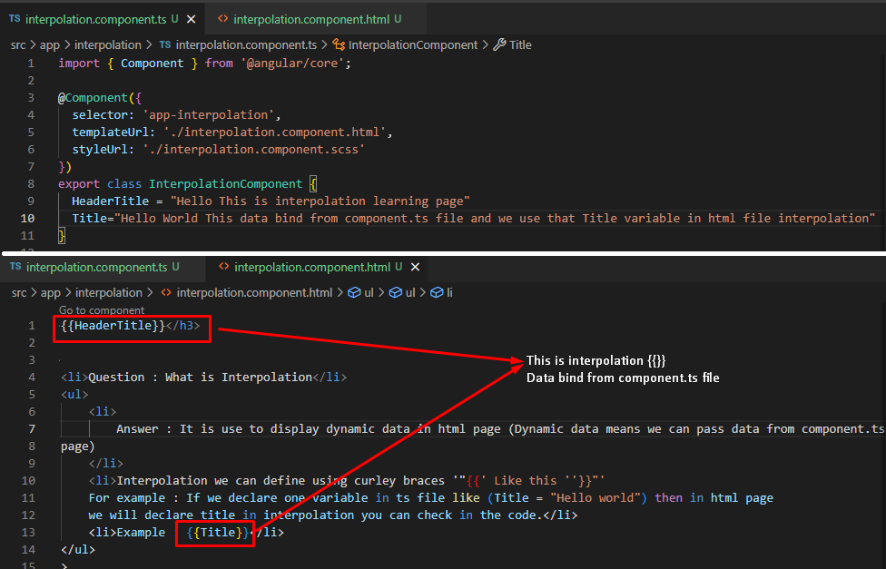

{{HeaderTitle}}
- Question : What is Interpolation
-
Answer : It is use to display dynamic data in html page (Dynamic data means we can pass data from
component.ts file to html
page)
- Interpolation we can define using curley braces '"{{' Like this ''}}"'
For example : If we declare one variable in ts file like (Title = "Hello world") then in html page
we will declare title in interpolation you can check in the code.
- Example : {{Title}}
- In Interpolation concept data will come from any way like we can pass data in property also
we can pass data from function and that function direcly call in html page
- {{GetData()}}

- Interpolation also perform operation like if we write 2+2 in interpolation then it will return 4 because
interpolation consider that 2+2 is as arithmetic operatoin like This here ( 2 + 2 = {{2+2}} )
-
In interpolation also we can match two string, match number etc.
- Question : What we can not achive in interpolation